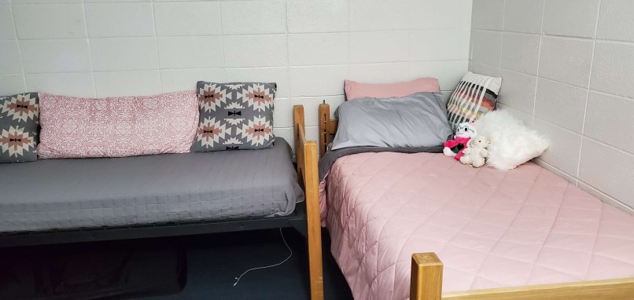
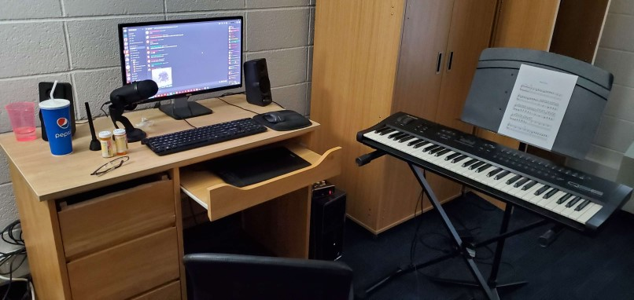

About
My name is Cadence Quick. I am attending Shepherd University and majoring in music composition.
I have a very tech-heavy background — with experience in game development, soundtrack production, digital art, and creative writing — which explains why I opted to host this portfolio on my own website. Since moving to West Virginia (from Georgia and the Carolinas) to start attending college, I've been excited to not only become a stronger composer, but a stronger writer as well.
As a hobby, I make "interactive fiction" — or — independent video games where the emphasis is not on the gameplay, but it instead is on the narrative. Exploring the writing process in the context of argumentative essays, using academic language, and taking my writing more seriously are valuable skills to me, and I hope that I can continue to improve those skills throughout my collegial experience.
 Content
In my first-year English 101 class, I learned a lot about the writing process. This page intends to document and revise the essays that I wrote during my first semester, reflect upon how my process has evolved since the start of the class, and organize any relevant miscellaneous thoughts.
Reflection
Seeing as I spent the last three years of high school as a self-directed learner (see the Encounters Essay section below) and I have lots of experience writing fiction (see the About section above), my relationship with writing as a process is very unique. My first semester in college has included a lot of, “right — okay — so that’s how writing is supposed to work.”
On top of my writing itself improving, my motivational and directional skills have improved thanks to the simple existence of prompts and deadlines. With self-driven art, it’s sometimes easy to say, “well, this isn’t working,” and shelve a project; but with the urgency to get something done, more projects typically get done.
As I’ve already stated, I value a core curriculum English course because it’s something that wasn’t already hammered-in for me. The potholes in my past writing are perfectly encapsulated by the font choice for The Third Rainbow Girl's Exterior — Lato. Regardless of the content of that paper, its font choice implies how new the concept of academic writing is to me. Taking myself seriously is something I still struggle with when I write, but since the beginning of the semester, I’ve grown the confidence required to come across as a bit less “amateur.” It was important for me to dip my toes into standardized essay structure, MLA formatting, and source-citing.
For The Third Rainbow Girl's Exterior, I remember emailing my professor to ask about the amount of material we’d be required to read before writing the paper — because I wasn’t sure if I felt completely comfortable writing about my topic without having experienced all of the source material. Convincing myself that it was even possible to write subjectively about something I didn’t know everything about was an undertaking in and of itself. For my revision, I strove to place much less blame on the author of the subject matter, Emma Copley Eisenberg, and more blame on the book’s marketing situation as a whole. By the end of writing the original paper, I was no longer suspicious of Eisenberg’s intention, but the finalized version still contained a lot of that accusatory language. I believe that partially shifting the main focus of my paper to raise eyebrows at the mysterious “marketing team” instead of Eisenberg herself strengthens my main point.
My analysis and synthesis essay had very noticeable evolution. On the other hand, my revision of Trans Youth and Their Ability to Thrive vs. Their Environments was a lot more subtle. That paper discussed a topic I was all too familiar with due to its extremely personal nature. I made various edits, large and small, but the conceptual foundation there was already rock-solid. A huge point that I wanted to make with that essay was that “it’s not just me.” Other people have similar struggles, and our struggles have similar answers. Hypocritically, however, I didn’t reference that many secondary sources. Foraging the internet for relevant and compelling sources was a task that potentially took my essay from “pity me” to “let’s make some changes.”
A piece of feedback I received from my professor stood out as uniquely helpful; there was a way to connect my two papers by referencing an excerpt from The Third Rainbow Girl that touched on the topic of my encounters essay — with evident ties to the exact college where my essay “takes place.” I thought this connection was extremely neat, and so I included it in my revision.
My non-fiction writing has genuinely come a long way in just one semester thanks to the help of Writing & Rhetoric I. Entering the next semester to take its sequel course while simultaneously switching my “main instrument” to vocals (as a music composition major) is exciting, because songwriting and lyrical analysis are topics that greatly interest me. I look forward to continuing to view writing as a process, and I hope to see my own writing continue to improve.
Encounters Essay
I wrote an essay titled Trans Youth and Their Ability to Thrive vs. Their Environments about my upbringing and why similar experiences to mine are frustratingly common.
For this essay, I interviewed my college roommate, a previously-online friend.
Image credit: Shepherd University's website
New Environments
I composed and produced an original song (on my own time) inspired by the content of my Encounters Essay. The piece is titled New Environments, and it acts as an artistic expression of the content discussed in the associated paper.
[this song contains explicit lyrics]
The Third Rainbow Girl - Analysis and Synthesis Essay
I also wrote an essay titled The Third Rainbow Girl's Exterior about the book by Emma Copley Eisenberg and its relationship with genre and marketing.
The original paper is rather messy.
Image credit: bestbates on eBay